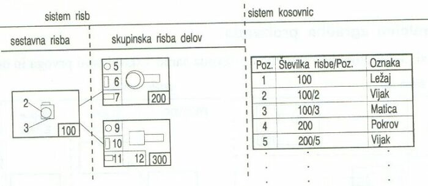

|
Naèin dokumentiranja z nestruktururano zgradbo izdelka je znaèilen za posamièno proizvodnjo. To pomeni, da izdelamo le en izdelek in ne serijo izdelkov. Ta naèin dokumentiranja omogoèa dokumentiranje enostavnih izdelkov, ki vsebujejo le podsestave ali skupine prvega reda. To so podsestavi, zgrajeni iz nedeljivih delov. Pri tem naèinu dokumentiranja izdelamo eno samo kosovnico za celoten izdelek. Za vsako novo naroèilo je potrebno izdelati novo kosovnico. Dokumentacija, ki podaja nestrukturirano zgradbo izdelka, mora biti posredovana vsem delavnicam ali podjetjem, ki sodelujejo pri izdelavi, v celoti. Te dokumentacije ne moremo deliti in pošiljati kooperantom le posamezne risbe ali dele kosovnice. Èe želimo dokumentacijo, ki podaja nestrukturirano zgradbo izdelka, deliti, moramo izdelati delne kosovnice. Kosovnica je torej ena sama in je enotna. V kosovnici so oznaèene vse risbe, ki jih paket dokumentacije vsebuje. Na posameznih risbah kosovnic ni. Kosovnica vsebuje tudi podatke o naroèilu in kupcu. Pozicije na posameznih risbah, ki jih paket vsebuje, so zapisane v kosovnici kot tekoèe številke. Vsak konstrukcijski sestavni del je podan nedvoumno s številko naroèila in s pozicijsko številko. Paket dokumentacije v naèinu dokumentiranja z nestruktururano zgradbo izdelka je sestavljen iz sestavne risbe in skupinskih risb posameznih sestavnih delov. Nestandardni deli so narisani posebej na lastni risbi.  Nestrukturirana zgradba risb in stavka kosovnic 1. Vprašanja za usmerjanje pozornosti in usvajanje novih besed: 1. V kakšnem primeru uporabljamo naèin dokumentiranja z nestrukturirano zgradbo izdelka? 2. Koliko kosovnic vsebuje paket dokumentacije, ki je izdelana na naèin dokumentiranja z nestrukturirano zgradbo izdelka? 3. Kateri sestavni deli so narisani posebej na lastni risbi? 4. Naštej podatke, ki jih lahko najdemo na kosovnici? 5. Kakšne vrste risb najdemo v paketu dokumentacije v naèinu dokumentiranja z nestrukturirano zgradbo izdelka? 6. V èem se razlikujeta med seboj sestavna risba in risba posameznih delov? 7. Koliko skupinskih risb delov vidiš na sliki zgoraj? 8. Koliko pozicij je vidnih v kosovnici risbe zgoraj? 9. Kateri element je oznaèen s pozicijo 2 na risbi številka 100? 10. Kateri element je oznaèen s pozicijo 3 na risbi številka 100? 2. Zapiši od ene do pet kljuènih besed, ki povzemajo vsebino te uène enote. 3. Vprašanja za razmislek, ponavljanje in povezovanje z lastno izkušnjo: 1. Zapiši besede v besedilu te uène enote, ki jih ne razumeš! 2. Si morda besede, ki jih ne razumeš, sreèal/a že kdaj prej? V kakšnih okolišèinah in s èim v zvezi? 3. Ali lahko razberemo iz dokumentacije tudi delitev dela pri izdelavi dokumentiranega izdelka? Po kateri informaciji v besedilu sklepaš tako? 4. Domaèa naloga: V enem do petih stavkih zapiši, kaj ti je v tej uèni enoti najbolj ostalo v spominu. |